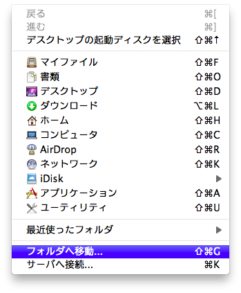
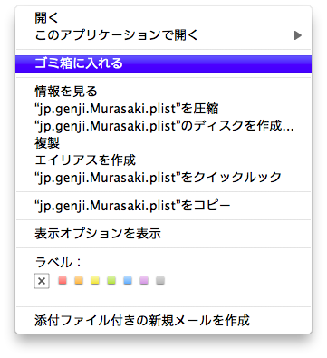

~/Library/Preferences を入力して「移動」ボタンをクリック
jp.genji.Murasaki.plist を探して削除
メニューバーの「表示」→「サイドバーを表示」やツールバーの「サイドバー」をクリックしてもサイドバーが表示できない不具合が発生する場合があります。
その場合は ~/Library/Preferences/jp.genji.Murasaki.plist を削除して Murasaki を再起動してみてください。
~/Library/Preferences を入力して「移動」ボタンをクリック
jp.genji.Murasaki.plist を探して削除